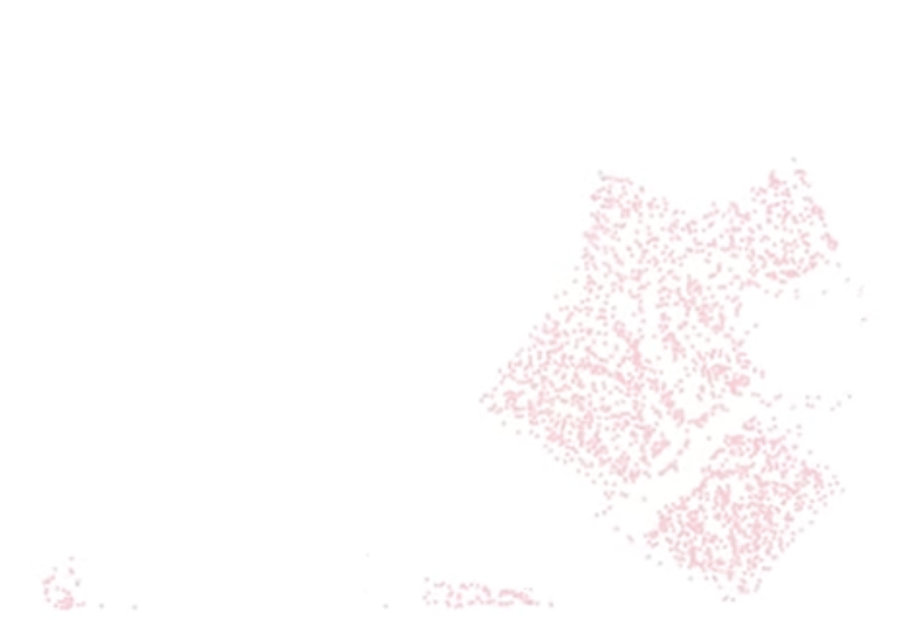
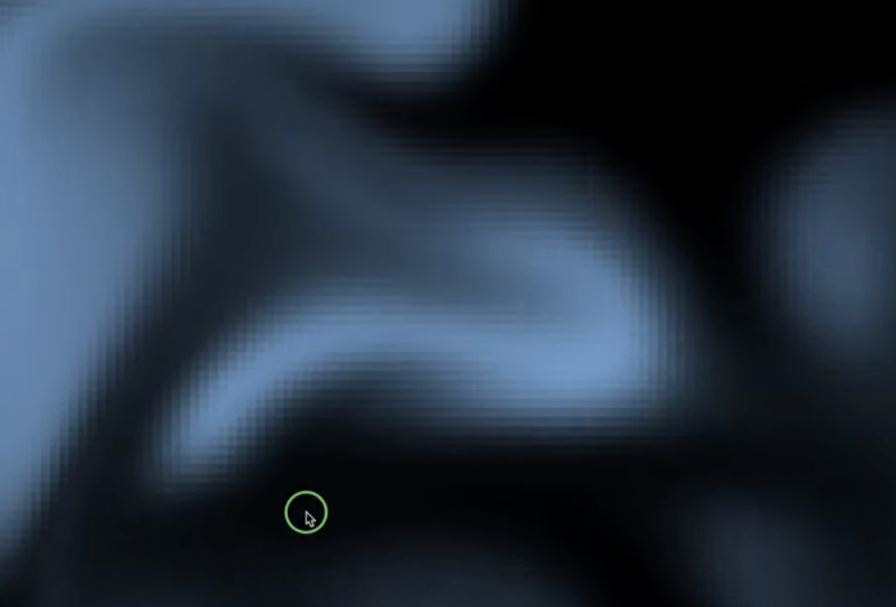

#
Yuki Kuwashima / 桑島侑己
Wakita Lab (Computer Simulation and Visualization)
iOS App Developer (Swift)
Graphics Engineer (Swift & Metal)
#
Fluid Simulation
Simulating fluid dynamics for animation.

Implementation of “A Material Point Method for Snow Simulation”
Made with Julia (February 2022)

Implementation of “Stable Fluids”
Made with Openframeworks (May 2021)
Animation of decaying plastics and animals in the ocean.
Made with Python & Taichi (June 2021)